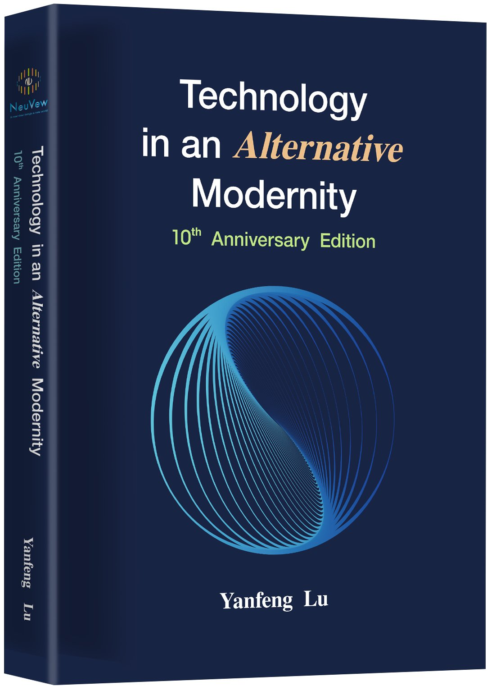
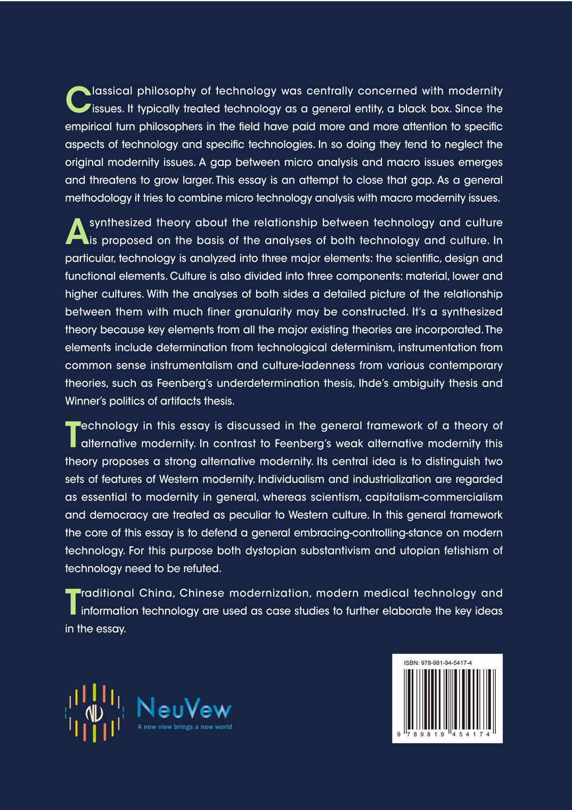
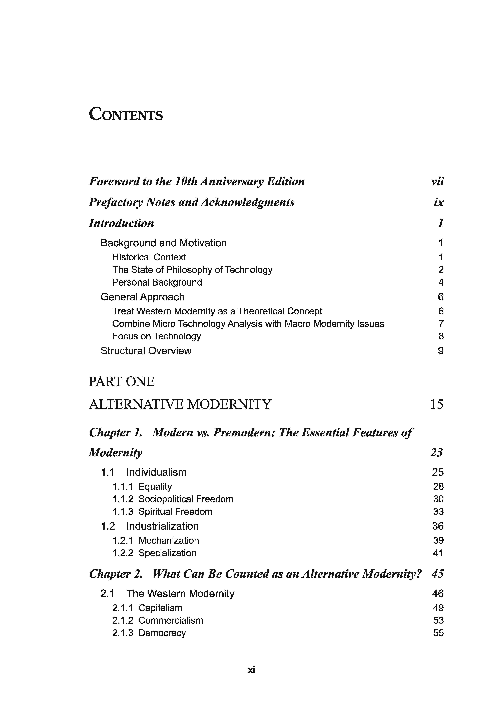
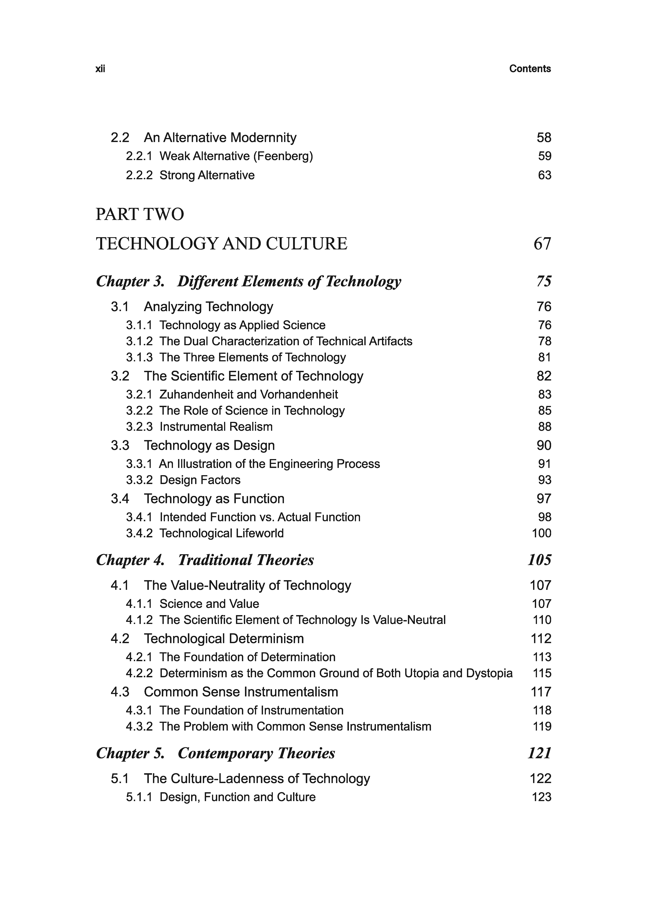
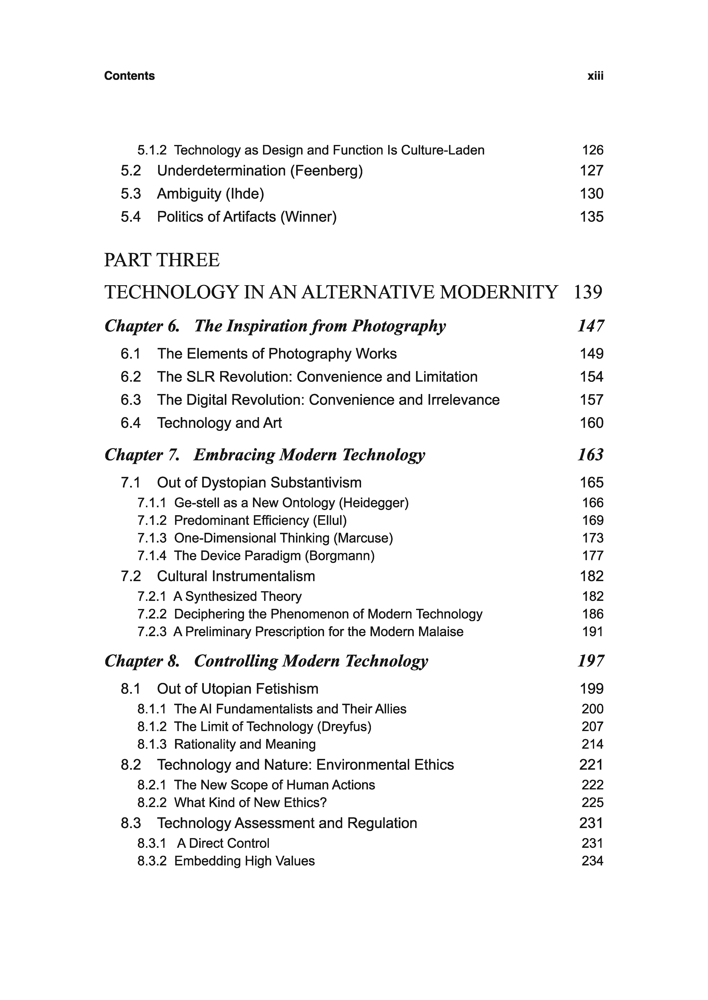
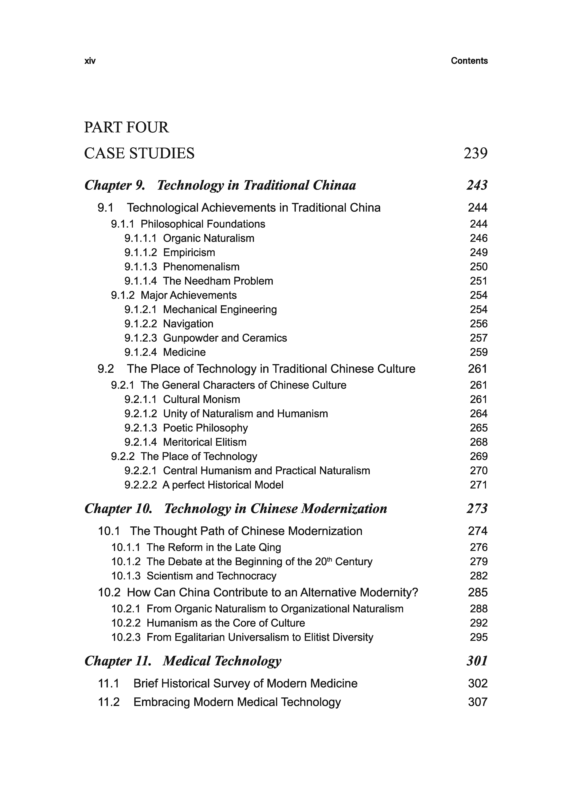
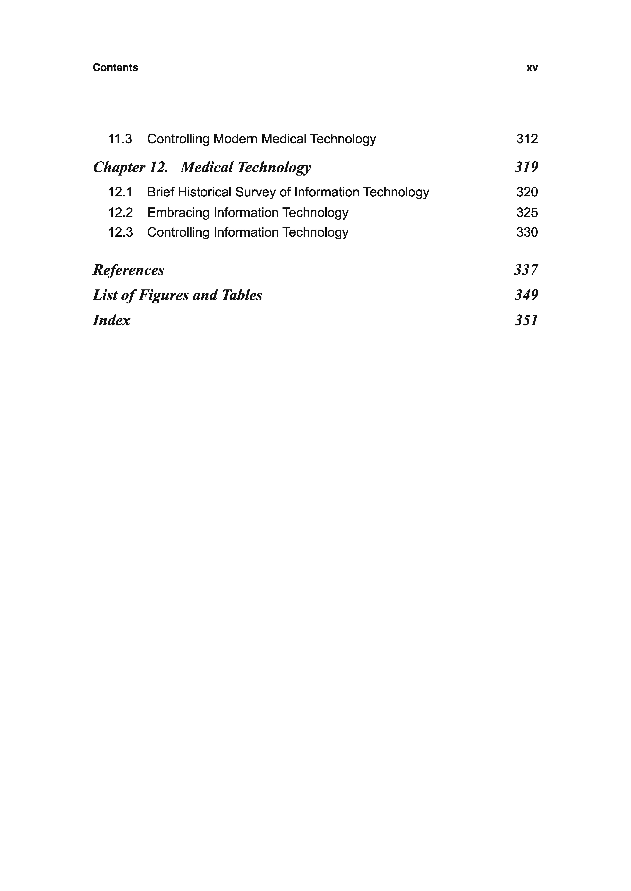

Technology in an Alternative Modernity







Foreword to the 10th Anniversary Edition
Over 12 years has passed since I wrote my dissertation. Human history has experienced dramatic developments during this short period of time. The theme of my dissertation was questioning modern technology in a framework of alternative modernity. Recent developments have made reflections on modern technology and the conception of alternative modernity ever more meaningful. Hence, the topics in my dissertation have become much more relevant today.
During this period, we have seen modern technology made significant advancements, two prominent areas among which are new energy and artificial intelligence (AI). These are ushering a new economic revolution in the scale of Agricultural and Industrial Revolutions. Just like in the Industrial Revolution, now modern technology is making big progress, but at the same time bringing about social upheaval. At the beginning of the Industrial Revolution, the steam engines and various automatic machines driven by them once displaced millions of farmers. Today, various intelligent robots driven by the new energy has started to displace millions of workers, not just blue-collar workers, but white-collar workers as well.
I have been working in an important AI field, speech synthesis, these years, and have personally experienced it quickly evolved from the traditional cascaded approach to partial adoption of deep learning, to end-to-end models and finally to large language models. The fast advancement of AI is truly amazing. Just like what happened in the history of technology, or even of AI in particular, dramatic progress rekindles and fans the flames of the old ideas of technology utopianism and dystopianism once again. With the promises of the new AI, people are talking about eliminating poverty and universal basic income, but at the same time, machine conquering man and the end of humankind. The technologies are brand new, but the thoughts are century old.
Against both utopianism and dystopanism concerning modern technology, I proposed the embracing-controlling-stance, based on detailed analyses of both technology and culture, and the relation between them, drawing from various traditional and contemporary theories of technology. In fact, my dissertation contains a substantial critique of AI up to that point, borrowing ideas from Dreyfus. I believe the critique is effective on the new phase of AI, without essential modification of argument. When utopianism and dystopianism are again causing contradiction and confusion, the embracing-controlling-stance on modern technology becomes ever more important.
In parallel with the dramatic advancements of technology, was the dramatic exposure of hidden problems in Western modernity. At the turn of the century, Huntington was already predicting the remaking of world order and Barzun was lamenting the decadence of Western modernity. A quarter of century later, the historical trend has turned more discernible. The dominance of the West is losing ground, and other major human civilizations are fighting for their legitimate status on the world stage. In this context, the notion of alternative modernity is ever more relevant.
Based on critical analyses of both Western modernity and Chinese traditional culture, I outlined a theory of strong alternative modernity in contrast with Feenberg’s weak one and suggested the way to construct Chinese modernity by combining essential cultural elements from Western modernity and Chinese tradition. As the article “an” in my dissertation title suggests, Chinese modernity is just one form of alternative to Western modernity. I hope my Chinese modernity theory could provide inspiration for other non-Western civilizations to construct their own alternatives, especially the Indian and the Islamic civilizations.
Combining the technology theory with the modernity theory, a key peculiar feature of Western modernity is the dominance of technology. For other civilizations to construct their own alternative modernity, developing technology to unsettle the economic and political dominance of the West is just the first step, and the final goal is to go beyond the dominance of technology and let their various cultures rein over technology. Men should be superior, not subordinate to machines.
10 years ago, I made a book version of my dissertation, printed a limited number of copies and then distributed them among relatives and friends. As its contents have become much more relevant today, I decided to formally publish it and distribute it more widely.
Many ideas in the book have undergone further development in these years. In particular, the original modernity theory has grown into a separate volume. Therefore, my strategy now is still to keep the contents of the book intact, leaving it as a genuine record of my personal thought development. Only the layout has been renewed and further language improvements made. But I confess language flaws remain, for which I again ask for tolerance.